Omnissa Dynamic Environment Manager (DEM) 2503
Navigation
As of version 9.9, User Environment Manager (UEM) was renamed to Dynamic Environment Manager (DEM).
This post applies to all Dynamic Environment Manager (aka User Environment Manager) versions including DEM 2312 (10.12) ESB, DEM 2212 (10.8) ESB, DEM 2111 ESB (10.4), and DEM 9.9 (ESB).
- Change Log
- Upgrade
- Installation Prerequisites
- Local Profile
- DEM Console Installation
- Configure Dynamic Environment Manager
- Personalization and DEM Templates
- Additional DEM Configuration
- DEM Application Profiler
- DEM Support Tool
:idea: = Recently Updated
Change Log
- 2025 April 18 - updated install instructions for DEM 2503 (aka 10.15)
- 2025 Jan 11 - Version History
- 2023 Oct 28 - Horizon Smart Policies - DEM 2309 adds FIDO2 and Storage Drive
- 2023 Apr 1 - Search button in DEM Console 2303
- 2022 Apr 11 - added Licensing section for 2203 and newer.
- 2021 June 18 - added info from Omnissa 83679 Dynamic Environment Manage(DEM) User File Type Association(FTA) Delay in Applying after Login.
Upgrade
If you are performing a new installation, skip to the Installation Prerequisites section.
When upgrading an existing installation of DEM or UEM, upgrade the FlexEngine on the Horizon Agents first.
The newest FlexEngine can still interpret the INI files from older DEM console. After your clients (FlexEngine) have been upgraded, you can upgrade the management console, which allow for new options, like elevated privileges and others, which (when enabled) can now be correctly interpreted by the upgraded clients (FlexEngine). After that update the ADMX files.
DEM 2203 and newer move FlexEngine licensing to the configuration share and DEM console. If you are upgrading existing FlexEngines, then the previous license will continue functioning. New FlexEngines need the new licensing configuration method.
Installation Prerequisites
Before performing the procedures detailed on this page, make sure you've created the DEM File Shares, imported the DEM GPO ADMX templates, created the GPOs for Horizon, and configured the Horizon GPOs for Dynamic Environment Manager.
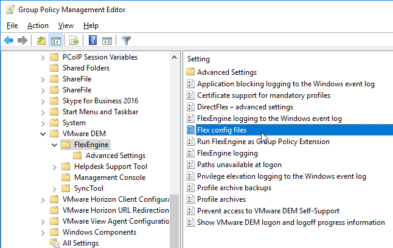
Omnissa Tech Zone Antivirus Considerations in a Horizon Environment: exclusions for Horizon, App Volumes, User Environment Manager, ThinApp
Omnissa Workspace Tech Zone has an excellent Quick-Start Tutorial for Dynamic Environment Manager. It's around 130 printed pages.
Local Profile
At user logon, DEM restores profile archives on top of a Windows profile, which is typically a local profile.
If your Horizon Agent machines are single-user, non-persistent that reboot at logoff, then local profiles are deleted at logoff.
If your Horizon Agent machines are multi-user machines (e.g. RDSH) that don't reboot every day, then you might need a process to delete local profiles when the user logs off. Here are some options:
- Schedule a delprof2.exe script that runs daily.
- A more advanced option is to add users to the local Guests group, which causes their profile to be deleted at logoff.
DEM Console Installation
In Horizon 2006 (aka 8.0), DEM is available in all editions of Horizon. There are two editions of DEM, each with different downloads and different DEM capabilities.
- Horizon 8 (2006+) Enterprise Edition and Horizon 7.13 Enterprise Edition are entitled to DEM Enterprise Edition, which has all features.
- Horizon 8 (2006+) Standard Edition and Horizon 8 Advanced Edition are entitled to DEM Standard Edition, which is limited primarily to Personalization features. If you are using FSLogix Profile Containers, then you don't need DEM Standard Edition.
DEM 2503 (10.15) is the latest release.
- DEM 2503 is an ESB release.
- Download DEM 2503 (10.15) Enterprise Edition.
- Also download the license file.
- If upgrading, don't upgrade the DEM Console until all of your DEM Agents have been upgraded.
- On your administrator machine, run the downloaded Omnissa Dynamic Environment Manager 2503 10.15 x64.msi.
- In the Welcome to the Omnissa Dynamic Environment Manager Enterprise Setup Wizard page, check the box next to I accept and click Next.
- In the Destination Folder page, click Next.
- In Choose Setup Type page, click Custom.
- In the Custom Setup page, change the selections so that only the console is selected and then click Next.
- In the Ready to install Omnissa Dynamic Environment Manager Enterprise page, click Install.
- In the Completed the Omnissa Dynamic Environment Manager Enterprise Setup Wizard page, click Finish.


Configure Dynamic Environment Manager
Here is a summary of the major Dynamic Environment Manager functionality:
-
Personalization (aka import/export user settings) – saves application and Windows settings to a file share. This is the roaming profiles functionality of Dynamic Environment Manager. You configure folders and registry keys that need to be saved. The import/export can happen at logon/logoff or during application launch/exit.
- Pre-configure application settings – configures files and registry keys for specific applications so users don’t have to do it themselves. Some examples: disable splash screen, default folder save location, database server name, etc.
- Self-support tool – users can use this tool to restore their application settings.
- DEM Standard Edition supports all Personalization features.
-
User Environment – configures Windows settings like drive mappings, Explorer settings, printer mappings, etc. This is similar to group policy but offers significantly more options for conditional filtering. Dynamic Environment Manager can configure any registry setting defined in an ADMX file.
-
DEM Standard Edition only has a limited set of User Environment settings (e.g., drive mappings). Most User Environment features require DEM Enterprise Edition.
- Most settings in DEM are only for users, not computers. DEM 2006 (aka 10.0) and newer support ADMX templates for Computer Settings. In older DEM, use Group Policy to configure Computer Settings.
- Best practice is to not mix Dynamic Environment Manager and user group policy. Pick one tool. If the same setting is configured in both locations then group policy will win.
- UEM 9.6 and newer support Windows Server 2019 as an Operating System condition.
- Horizon Smart Policies - Use Horizon Conditions (e.g., client IP) to control device mappings (e.g., client printing) and PCoIP/Blast Bandwidth Profile.
- Privilege Elevation (UEM 9.2 and newer) - allow apps to run as administrator even though user is not an administrator. Installers can also be elevated.
Links:
- Dynamic Environment Manager (DEM) documentation can be found at Omnissa Docs.
- Fabian Lenz Let’s troubleshoot User Environment Manager (#UEM) 9.X: How to avoid errors during the installation
Initial Configuration (Easy Start)
To perform an initial configuration of Dynamic Environment Manager, do the following:
- Launch the DEM Management Console from the Start Menu.
- Enter the path to the DEMConfig share and click OK.
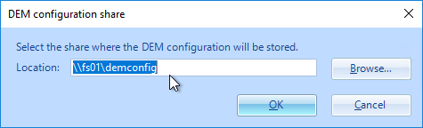
- In the ribbon, click Configure. These Settings checkboxes define what is displayed in the management console. Leave it set to the defaults and click OK.
- In the Personalization ribbon, on the far right, click Easy Start.

- Select your version of Office and click OK. Office 2019 and Office 2016 are essentially the same.

- Click OK when prompted that configuration items have been successfully installed.
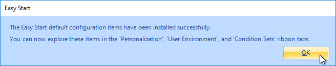
- Review the pre-configured settings to make sure they are acceptable. For example, on the ribbon named User Environment, under Shortcuts, Dynamic Environment Manager might create a Wordpad shortcut that says (created by VMware UEM). You can either Disable this item or delete it.
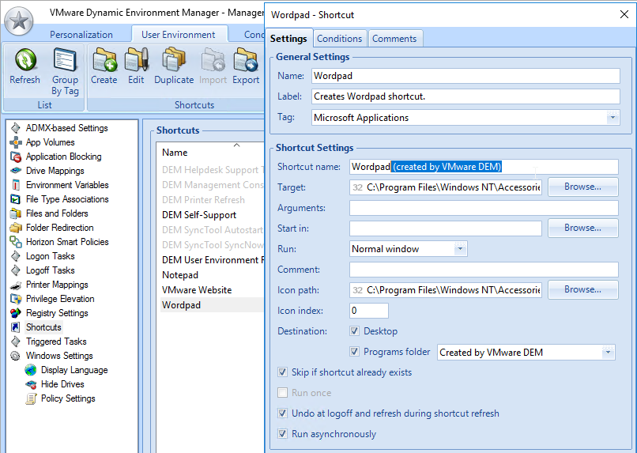
- Go to the ribbon name User Environment. On the left, expand Windows Settings and click Policy Settings. On the right, if there is a setting to Remove Common Program Groups, then click Edit.
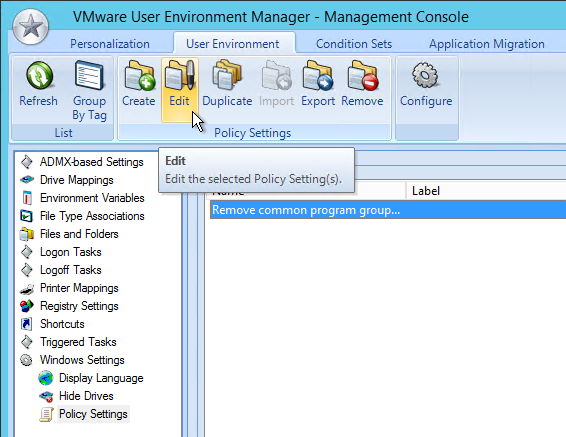
- Consider adding a condition so it doesn’t apply to administrators.
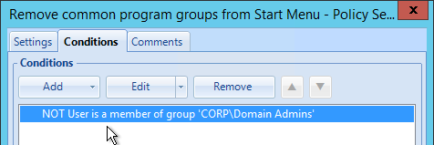
- Consider adding a condition so it doesn’t apply to administrators.


DEM Licensing
DEM 2203 and newer moved FlexEngine Agent licensing to the DEM Configuration Share and DEM Console.
- Download the Production License File from the same place you downloaded DEM: DEM 2312 (10.12) Enterprise Edition, or DEM 2312 (10.12) Standard Edition.

- In the DEM console, click the top-left star icon and then click License.
- Click Manage.
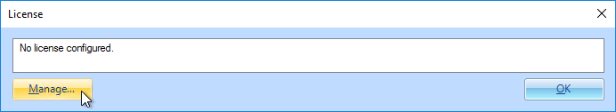
- Choose License File and then select the downloaded Omnissa-DEM-10.14.0-GA.lic file.
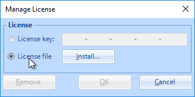
- Click OK.
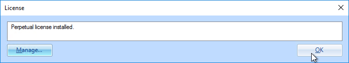

DEM Console places the license info in the DEM Configuration Share file under \general\FlexRepository\AgentConfiguration.
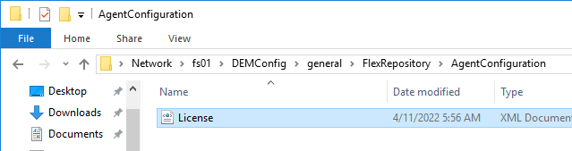
Common Configurations
- DEM 2303 (10.9) and newer have a Search button to help you find configuration files.

-
To roam the Start Menu in Windows 10 1703 and newer:
- Go to the ribbon named Personalization, click a folder, and click Create Config File.
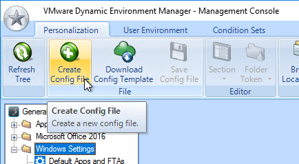
- Select Use a Windows Common Setting and click Next.
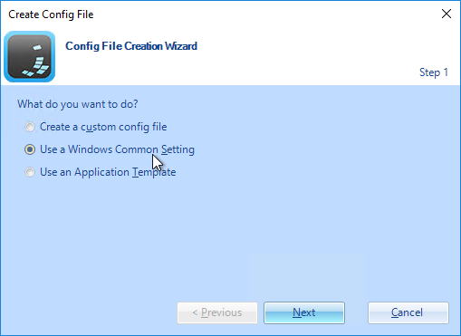
- Select Windows 10 Start Menu - Windows 10 Version 1703 and higher. This option is only available in newer versions of DEM. It should work with Windows Server 2019, but it doesn't apply to Windows Server 2016, which is actually version 1607.
- Enter a file name. DEM will create a .zip file for each user with this name. Click Finish when done.
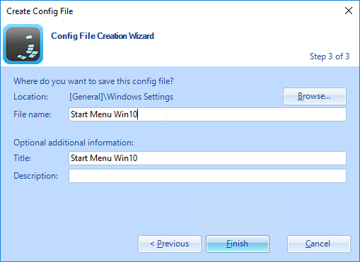
- You can run Triggered Tasks when a session is reconnected, workstation is unlocked, or on a schedule (DEM 2306 and newer). This is useful for re-evaluating Smart Policies, as detailed below.
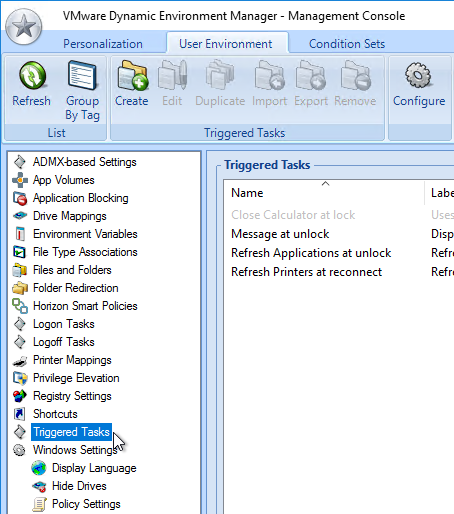
- DEM 2111 and newer have a Trigger named App Volumes logon-time apps delivered. This was renamed from the older All AppStacks Attached trigger. It was renamed because App Volumes 2111 supports on-demand apps.
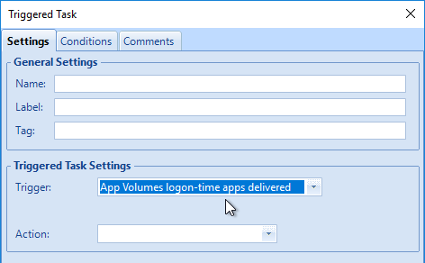
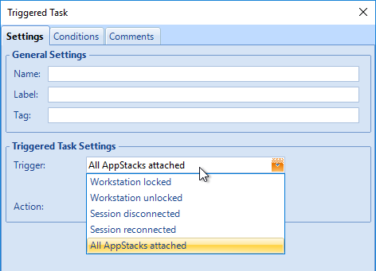
- DEM 2306 (10.10) and newer have a Schedule trigger.

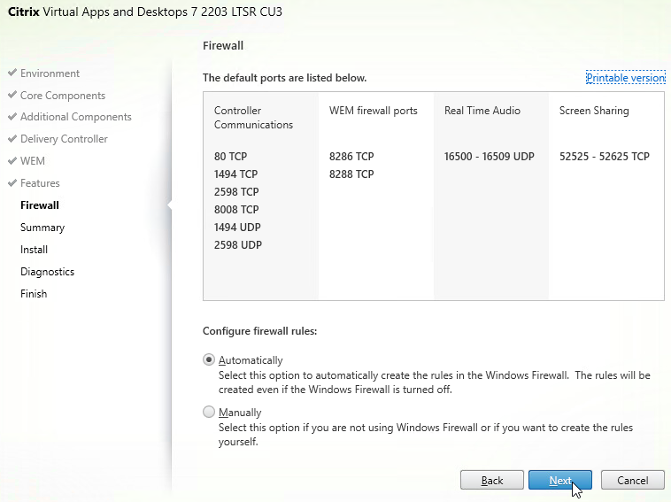
- You can pick one of the predefined Actions or choose Run custom command to run a script. Some scripts might need an additional configuration under Privilege Elevation.

- UEM 9.3 and newer have a setting to store Outlook OST file on App Volumes writable volumes. Go to the ribbon named User Environment. Right-click App Volumes and create a setting. Check the box next to Store Offline Outlook Data File (.ost) on writable volume. Configure other fields as desired. Note: this setting only applies to new Outlook profiles.
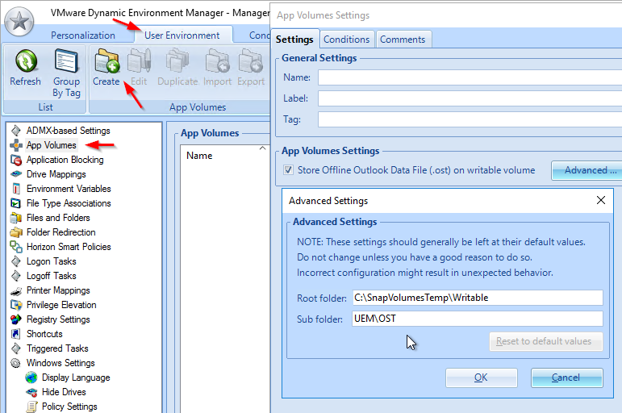
- Go to the ribbon named Personalization, click a folder, and click Create Config File.
Links:
- Nigel Hickey Leveraging VMware UEM to reduce Microsoft GPO usage: Configure ADMX settings in UEM.

Version History
DEM 2412 and newer have a Version History feature.
- On any ribbon, click Configure.
- On the Version History tab, enable the feature. This feature overrides Configuration Changelog logging to disk. Click OK to close the Settings window.
- Each configuration item in the DEM console has a Version History tab. You can click an older version and then click Restore to revert a change.


Horizon Smart Policies
Horizon Smart Policies let you control (e.g. disable) Horizon functionality for external users or other conditions.
- In UEM 9.0 and newer, go to User Environment > Horizon Smart Policies, and create a policy.
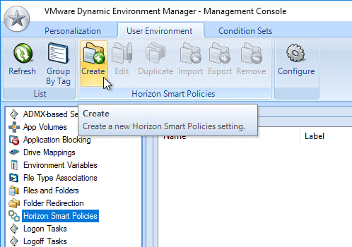
- DEM 9.11 has an expanded list of settings configurable using Horizon Smart Policies.
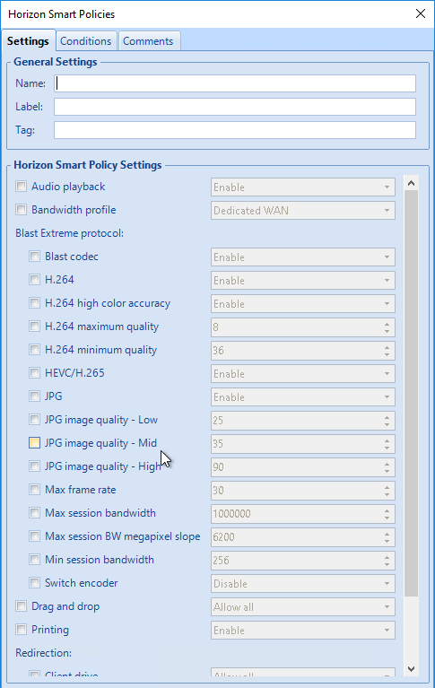
- DEM 2309 (10.11) and newer can control FIDO2 and Storage drive.

- DEM 2306 (10.10) and newer can control Browser Content Redirection.

- UEM 9.8 and newer have many Horizon Smart Policy Settings, including Drag and drop.
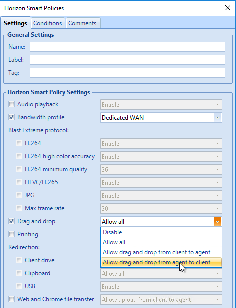
- On the Conditions tab, you can use any of the available conditions, including the Horizon Client Property conditions.
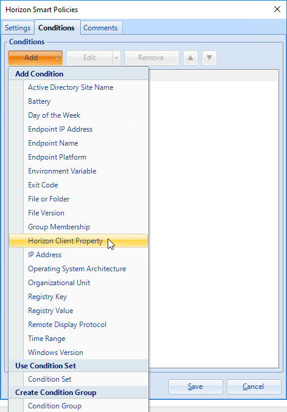
- To detect external users, select Horizon Client Property > Client Location = External. UAG and Security Server set the session's location to External.
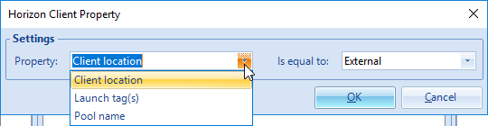
- To detect external users, select Horizon Client Property > Client Location = External. UAG and Security Server set the session's location to External.
- You can also enter a Horizon Client Property condition that corresponds to the ViewClient_ registry keys. In the Property field, type in a property name (remove ViewClient_ from the property name). See VMware Blog Post Enhancing Your VMware Horizon 7 Implementation with Smart Policies.
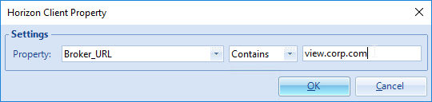
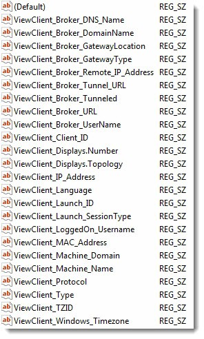
- There's Endpoint Platform as a policy condition. Create a Policy, go to the Conditions tab, and select the Endpoint Platform condition.
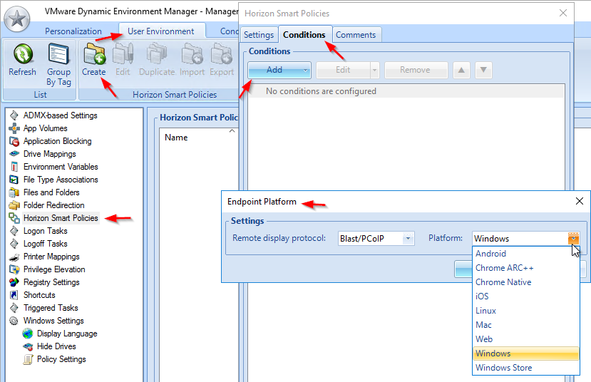
- Some of the conditions have Matches Regex. For example, Endpoint name and Horizon Client Property > Pool name.
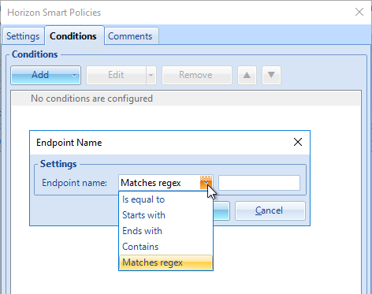
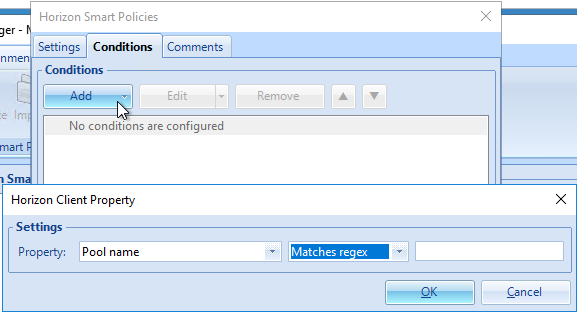
- To reapply Horizon Policies when users reconnect to an existing session, go to User Environment > Triggered Tasks, and click Create. Or you can edit one of the existing Triggered Tasks settings.
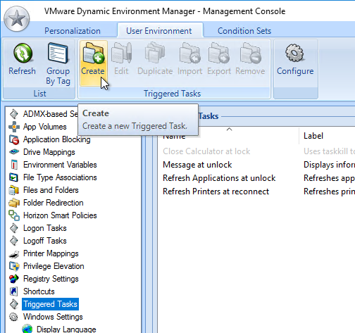
- Change the Trigger to Session Reconnected.
- Change the Action to User Environment refresh. Select Horizon Smart Policies and click Save.
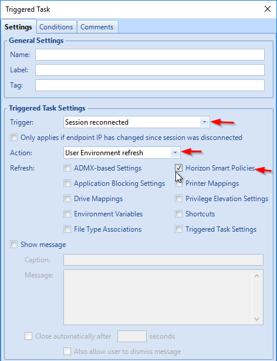
Application Blocking
- UEM 9.0 adds an Application Blocking feature. To enable it, go to User Environment > Application Blocking, and click the Global Configuration button.
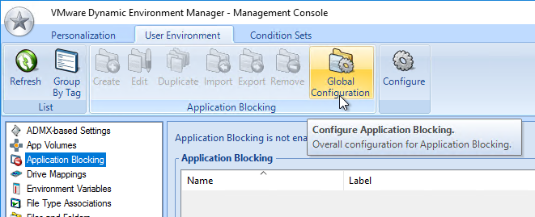
- Check the box to Enable Application Blocking. Specify Conditions where, if true, then App Blocking is enabled. These are the same conditions available in other policies and settings. Click OK.
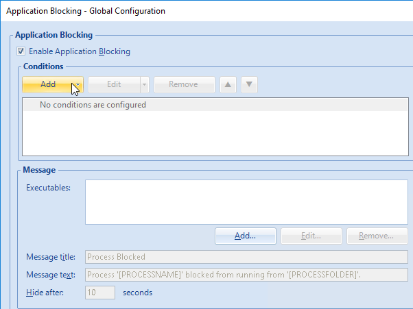
- Then you can create an Application Blocking setting to designate the folders that users can run executables from, or what file hashes are allowed.
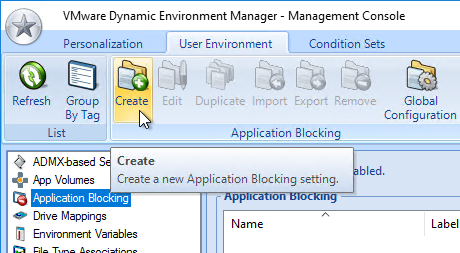
- You can add folders that allow or block apps. Any executable in these paths will be allowed or blocked. By default, executables in Windows and Program Files (including x86) are allowed.
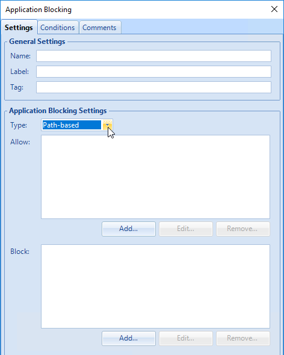
- UEM 9.1 and newer allows File Hashes in addition to File Paths. Set the Type to Hash-based, click Add, browse to an executable, UEM will compute the hash, and add it to the list.
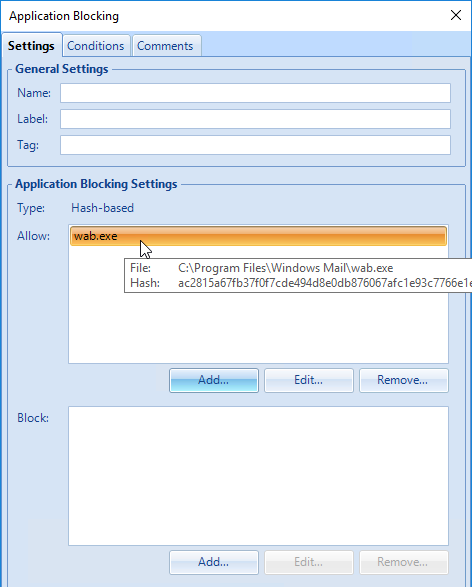
- UEM 9.2 and newer supports Publisher-based allow. Set the Type to Publisher-based, click Add, browse to an executable, UEM will read the certificate, and add it to the list. Note: A challenge with hash-bashed and publisher-based rules is that the policy might have to be updated whenever the app is updated.
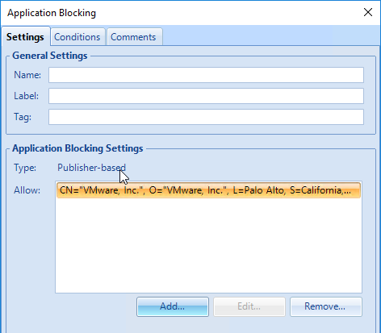
Privilege Elevation
- UEM 9.2 adds a Privilege Elevation feature, which allows executables to run as administrator even if users are not administrators. To enable it, go to User Environment > Privilege Elevation, and click the Global Configuration button.
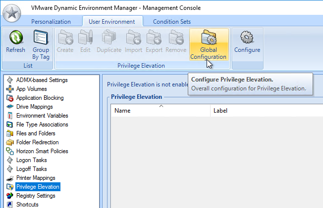
- Check the box to Enable Privilege Elevation. Specify Conditions where, if true, then Privilege Elevation is enabled. These are the same conditions available in other policies and settings.
- If you allow installers to be elevated, elevate the installer's child processes too, check the box. This checkbox only applies to installers. Child processes of elevated applications is enabled when creating a Privilege Elevation configuration setting.
- When an application is elevated, the user can be asked to allow it. This prompt is intended to inform the user that the application has more permissions than it should, and thus be careful with this application. Click OK.
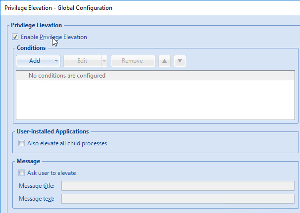
- Then you can create a Privilege Elevation setting to designate the applications that should be elevated. The applications can be specified by a path, a hash, or a publisher certificate. These are essentially the same options as Application Blocking.
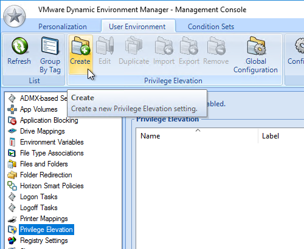
- Path-based user-installed application lets you elevate installers. The other three options elevate applications, but not installers.
- The child processes checkbox applies to applications.
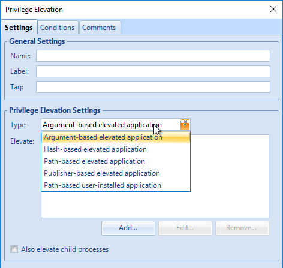
- UEM 9.4 adds Argument-based elevated application, which lets you elevate specific scripts and/or Control Panel applets.
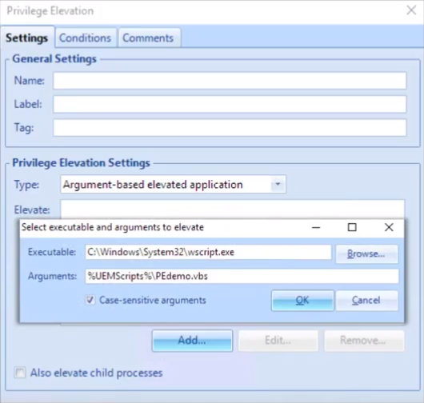
- DEM Group Policy settings can be enabled to log both Application Blocking and Privilege Elevation to Event Viewer
Computer Settings
DEM Enterprise Edition 2006 and newer can deploy computer-based ADMX settings.
- Domain Computers must have Read permission to the DEM Config file share.
DEM 2006 and newer Agents (FlexEngines) must be configured to enable computer settings. You can either configure registry settings on each DEM Agent machine, or in DEM Agent 2103 and newer you can use an installer command-line switch. Both are detailed at Perform Installation with Computer Environment Settings Support at Omnissa Docs.
- Group Policy Preferences can push these registry keys to the Horizon Agent machines. Or you can manually modify the registry in your master images. If you use group policy, then make sure the group policy applies to your master image. The minimum registry values are Enabled and ConfigFilePath as detailed at Perform Installation with Computer Environment Settings Support at Omnissa Docs. For the list of additional registry values, see FlexEngine Configuration for Computer Environment Settings at Omnissa Docs.

-
Command line install looks something like below. The command line installer switch sets the same ConfigFilePath and Enabled registry values as shown above.
msiexec /i "\\fs01\bin\Omnissa\DEM\Omnissa-DEM-Enterprise-2503-10.15\Omnissa Dynamic Environment Manager Enterprise 2503 10.15 x64.msi" /qn COMPENVCONFIGFILEPATH=\\fs01\DEMConfig\general

Do the following to enable Computer Environment settings in the DEM Console:
- In the DEM Management Console, at the right side of any ribbon, click Configure.
- At the bottom of the General tab, check the box next to Computer Environment.
- A new Computer Environment ribbon is added. DEM 2009 and newer have Startup Tasks and Shutdown Tasks.
- With ADMX-based Settings highlighted on the left, click Manage Templates in the ribbon.
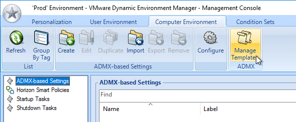
- At the bottom of the window, click Add Folder.
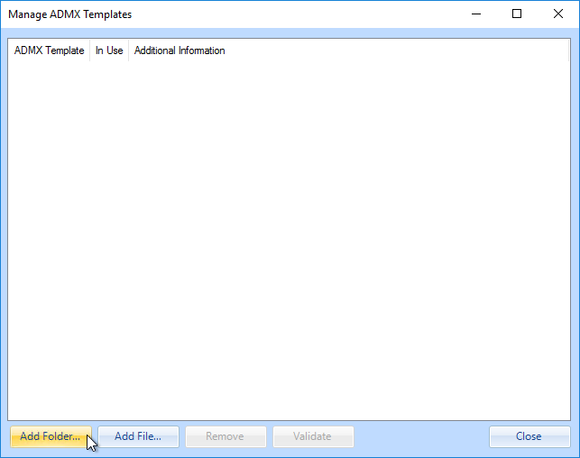
- If you have PolicyDefinitions in your SYSVOL, then browse to that. Or you can point it to C:\Windows\PolicyDefinitions. Click OK.
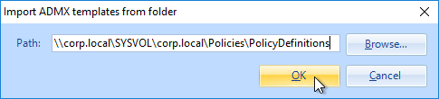
- Click OK after import is successful. DEM copied the .admx files into the DEM Config share. You can run this again any time to update templates.
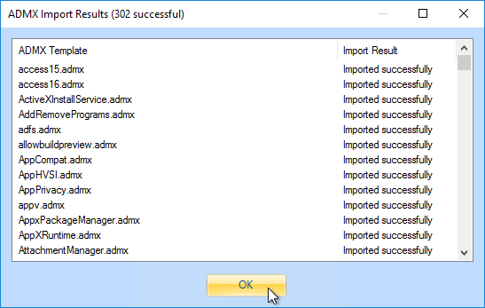
- With ADMX-based Settings selected on the left, click Create in the ribbon.
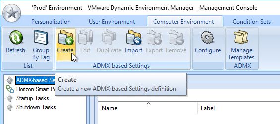
- At the bottom, click Select Categories.
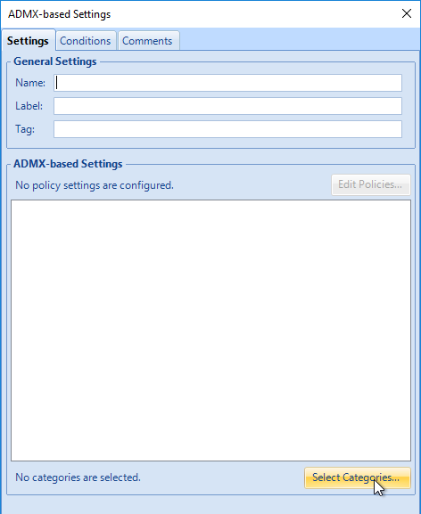
- Select a category where your setting is located and click OK.
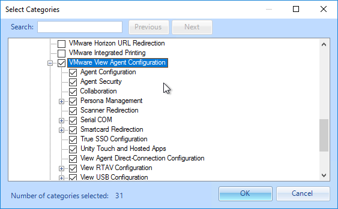
- At the top of the window click Edit Policies.
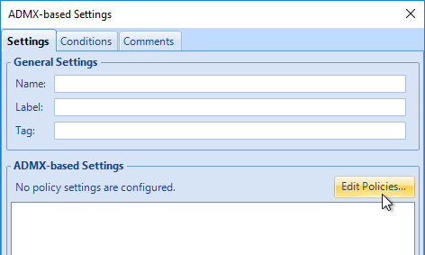
- Only the settings for your chosen categories are shown. Configure these settings the same way you would configure them in group policy. Then close the window.
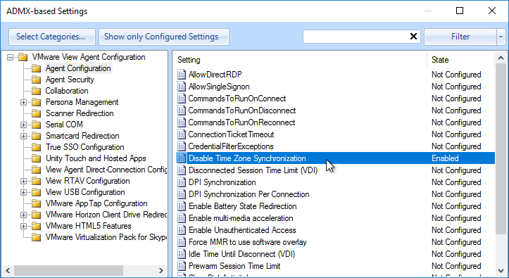
- DEM shows the configured settings.
- On the Conditions tab, you can add conditions. Obviously the user-based conditions will not be available for computer-based settings.


Personalization and DEM Templates
Omnissa has provided a list of Personalization Templates to simplify your configuration.
- To save user settings at logoff and restore at logon, you must specify the settings to save. Easy Start created a bunch of configurations on the Personalization ribbon. Note: DEM 9.11 adds a Search box to this ribbon.

- You can see what settings these save. On the tab named Import / Export, on the top right, click Manage, and then click Expand.
- Click Yes to expand it.
- After reviewing the config, click a different Personalization setting, and then click No to not save your changes.
- Click Yes to expand it.
- To save more profile settings at logoff, on the ribbon named Personalization, select a folder (or create a new folder), and then click Create Config File.
- A wizard appears. You can use one of the built-in Windows Common Setting or Application Templates. Or you can create your own.
- DEM 9.10 and newer have a Windows Common Setting named Default applications - File type associations and protocols. For details, see Ivan de Mes at Managing File Type Associations (FTA) natively using Dynamic Environment Manager.
- Also enable the GPO setting Do not show the 'new application installed' notification at Computer Configuration > Policies > Administrative Templates > Windows Components > File Explorer.
- To avoid a delay in applying FTAs after login, Omnissa 83679 recommends setting HKEY_CURRENT_USER\SOFTWARE\Microsoft\Windows\CurrentVersion\Explorer\Serialize\StartupDelayInMSec (DWORD) = 0.
- Also enable the GPO setting Do not show the 'new application installed' notification at Computer Configuration > Policies > Administrative Templates > Windows Components > File Explorer.
- UEM 9.4 and newer have a Windows Common Setting for Windows 10 Start Menu - Windows 10 1703 and higher
- DEM 9.10 and newer have a Windows Common Setting named Default applications - File type associations and protocols. For details, see Ivan de Mes at Managing File Type Associations (FTA) natively using Dynamic Environment Manager.
-
Download a template and import it.
- In the DEM Console, on the Personalization tab, click the Configure button to locate your DEM Configuration file share.
- Extract the downloaded templates to the General\Applications folder in the DEM Config Share.
- The downloaded template should then show up in the Personalization tab under the Applications folder. If you don't see it, click the Refresh Tree icon.
- DirectFlex - to speed up logins, enable DirectFlex whenever possible. Instead of restoring the files during logon and thus delaying the login, DirectFlex restores the settings on-demand when the user launches the application. DirectFlex can be enabled on most application configurations. However, Windows settings (e.g. Start Menu) should be loaded during login rather than on-demand after login.
- In the DEM Console, on the Personalization tab, click the Configure button to locate your DEM Configuration file share.
Additional DEM Configuration
-
VMware Blog Post VMware User Environment Manager, Part 2: Complementing Mandatory Profiles with VMware User Environment Manager details the following:
- Personalization Settings (what settings are roamed)
- Predefined App Settings
- User Environment Settings (shortcuts, drive mappings, and so on)
- Active Directory Attribute References - DEM 2009 and newer support Active Directory Attribute References like %{AD$extensionAttribute8}%\%username%\Archives.
- ViewClient Property References - DEM 2009 and newer support ViewClient Property References in the %{ViewClient_propertyName}% format.
- File Type Associations - Ivan de Mes Export/Import File Type Associations (FTA) successfully using UEM uses GetUserFTA.exe and SetUserFTA.exe to backup and save file type associations at logoff and logon.
- Start Menu - Customize Windows 10 Start Menu Layout via UEM and App Volumes.
-
Predefined settings - Fabian Lenz has a series of articles on Predefined settings in UEM:
-
Predefined settings (Basic concepts) explains the four types of Predefined Settings.
- Predefined settings – Deep how-to (Internet Explorer) explains how to use Application Profiler, or a regular user DEM profile archive, to create Predefined Settings.
- Predefined settings – Dynamic Placeholder explains how to use environment variables in Predefined Settings.
- ThinApp - To integrate ThinApp with UEM, configure DEM to save the application's setting (e.g. AppData, HKCU registry key). You can use Application Profiler to identify these settings locations. Then configure ThinApp with Merged Isolation Mode for those locations. Also enable DirectFlex.
- Run Once - Omnissa 2146336 Run Once option behave differently in combination with a Local User Profile: The Run Once option for DEM configurations, such as shortcuts, has no effect when a Local User Profile is used. As a result, the UEM configuration runs at each login. To work around, set the
**RunOnceSpecial**attribute in DEM XML configuration files.
User Environment Manager 8.7 and newer has a UEMResult feature that lets you see what settings were applied to the user. The .xml file is only updated at logoff. To enable for a particular user, go to the user’s Logs folder and create a folder named UEMResult. At logoff, DEM will put an .xml file in this folder. More information at Omnissa Docs.
From Omnissa 2113514 Enabling debug logging for a single user in Omnissa Dynamic Environment Manager: To configure FlexEngine to log at debug level for a single user, create an empty FlexDebug.txt file in the same folder as the standard log file for this user. This triggers FlexEngine to switch to debug logging for this particular user.
DEM Application Profiler
This tool cannot be installed on a machine that has FlexEngine (aka DEM Agent) installed:
- .NET Framework 3.5 is required.
- In the Dynamic Environment Manager files, in the Optional Components folder, run Omnissa DEM Application Profiler 2412 10.14 x64.msi.
- In the Welcome to the Omnissa DEM Application Profiler Setup Wizard page, check the box next to I accept and then click Next.
- In the Custom Setup page, click Next.
- In the Ready to install Omnissa DEM Application Profiler page, click Install.
- In the Completed the Omnissa DEM Application Profiler Setup Wizard page, click Finish.


You may now use the tool to determine where applications store their settings and export a default application configuration that can be pushed out using Dynamic Environment Manager.
- See Omnissa Docs for details.
- vDelboy VMware User Environment Manager Application Profiler has an overview of the process.
- VMware Blog Profiling Applications with VMware User Environment Manager details how to use Application Profiler to determine where Chrome settings are stored and upload that configuration to Dynamic Environment Manager.
DEM Support Tool
vDelboy - VMware UEM Helpdesk Support Tool
Do the following to configure the environment for the support tool:
- In the Dynamic Environment Manager Console, click the star icon on the top left, and click Configure under Helpdesk Support Tool.
- Click Add.
- In the Profile archive path field, enter the user folder share (the same one configured in Dynamic Environment Manager GPO). At the end of the path, enter \[UserFolder]\Archives.
- Check the other two boxes. The paths should be filled in automatically. Make sure they match what you configured in the Dynamic Environment Manager group policy object. Click OK.
- Click Save.
- Omnissa recommends creating a new GPO for the Support Tool. This GPO should apply only to the support personnel.
- On the Scope tab, change the filtering so it applies to DEM Support and DEM Admins. If this GPO applies to machines with group policy loopback processing enabled, then also add Domain Computers.
- Edit the GPO.
- Go to User Configuration | Policies | Administrative Templates | Omnissa DEM | Helpdesk Support Tool.
- Double-click the setting DEM configuration share.
- Enable the setting and enter the path to the DEMConfig share. Click OK.
- Consider enabling the remaining GPO settings. Read the Explain text or refer to the documentation.


Do the following to install the support tool.
- Some support tool functions require the FlexEngine (aka DEM Agent) to be installed on the help desk machine.
- In the extracted Dynamic Environment Manager files is an Optional Components folder. From inside that folder run Omnissa DEM Helpdesk Support Tool 2412 10.14 x64.msi.
- In the Welcome to the Omnissa DEM Helpdesk Support Tool Setup Wizard page, check the box next to I accept and click Next.
- In the Destination Folder page, click Next.
- In the Ready to install Omnissa DEM Helpdesk Support Tool page, click Install.
- In the Completed the Omnissa DEM Helpdesk Support Tool Setup Wizard page, click Finish.


Once the Helpdesk Support Tool is installed, you can launch it from the Start Menu, search for users, and then perform operations on the archives.

Related Pages
- Back to Omnissa Horizon 8